항공기사 (2007-08-05 기출문제)
1과목: 항공역학
1. 표준대기권의 공기에 적용할 수 있는 관계식 중에서 가장 올바른 것은? (단, ρ=밀도, ν=속도,
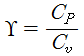
, P=압력, C=분자운동속도, V=동점성계수이다.)- 공기의 압력＝

- 음파의 전파속도＝

- 공기의 점성계수＝

- 공기의 압축성＝

(정답률: 알수없음)

2. 고도 10000m 에서의 온도를 구하면 얼마인가? (단, 해면고도 (sea-level)에서의 온도
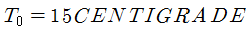
이다.)- 78K
- 115K
- 135K
- 223K
(정답률: 알수없음)
3. 속도 포텐셜
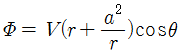
는 반지름 a인 원통 주위를 이상유체가 순환 없이 흐를 때에 나타낸다. 원통주위에서의 최대속도는?- -3V
- -2V
- -V
- -Vsinθ
(정답률: 알수없음)
4. 유도항력 (Induced Drag)에 대한 설명으로 가장 관계가 먼 내용은?
- 날개스팬 (Span)이 커지면 감소한다.
- 앙력계수가 커지면 증가한다.
- 가로세로비 (Aspect Ratio)가 커지면 증가한다.
- 날개면적 (S)이 커지면 증가한다.
(정답률: 알수없음)
5. 비행기에 사용되는 에어포일이 갖추어야할 될 다음 조건 중에서 가장 이상적인 것은 (단, 양력계수:CL, 항력계수: CD)
- CL과 CD가 커야 한다.
- CL이 크고, CD가 작아야 한다.
- CD가 크고, CL이 작아야 한다.
- CL과 CD가 작아야 한다.
(정답률: 알수없음)
6. 수평비행 중에 돌풍을 받아 비행기의 기수가 올라갔다. 그러나 안정한 비행기는 원위치로 되돌아 오려는 모멘트가 작용한다. 이 같은 작용은 주로 무엇에 의해서 생기는가?
- 날개에 작용하는 양력의 변화에 의한 빗놀이 모멘트
- 수직꼬리날개 (Vertical tail)에 의한 비행기 중심에서의 옆놀이 모멘트
- 수평꼬리날개에 의한 비행기 중심에서의 키놀이 모멘트
- 날개에 작용하는 항력의 변화에 의한 키놀이 모멘트
(정답률: 알수없음)
7. 정상류 (steady-flow)에 대한 설명으로 가장 관계가 먼 내용은?
- 유선 (stream line)은 서로 교차하지 않는다.
- 임의 단면에서의 물리량의 상태는 시간에 따라 달라질 수 있다.
- 유관의 어느 단면에서나 energy-level은 같다.
- 임의 지점에서의 속도, 압력, 밀도는 시간에 따라 변하지 않는다.
(정답률: 알수없음)
8. 돌풍하중계수 (gust load factor)에 대한 설명으로 가장 올바른 내용은?
- 비행속도 (V)의 제곱에 비례한다.
- 날개하중 (
 ) 에 반비례한다.
) 에 반비례한다. - 돌풍속도 (KU)의 제곱에 비례한다.
- 날개의 양력기울기에 반비례한다.
(정답률: 알수없음)
9. Dorsal Fin 을 장착하였을 경우 그 효과로 가장 옳은 것은?
- 가로 안정성이 좋아진다.
- 방향 안정성이 좋아진다.
- 세로 안정성이 좋아진다.
- 실속특성이 좋아진다.
(정답률: 알수없음)
10. 항공기 프로펠러에 대한 설명으로 가장 올바른 것은?
- 프로펠러의 추력은 프로펠러의 지름의 3승에 비례한다.
- 프로펠러의 효율은 진행률 (advance ratio) 비례한다.
- 프로펠러의 추력은 회전속도의 3승에 비례한다.
- 프로펠러의 효율은 회전속도와 지름에 비례하고, 속도에 반비례한다.
(정답률: 알수없음)
11. 다음 중 프로펠러의 추력을 나타내는 식으로 옳은 것은? (단, Ct:추력계수, Cp:동력계수, ⍴:밀도, n:회전속도, D:프로펠러의 지름)
- T=Ctρn3D5
- T=Ctρn2D4
- T=Cpρn5D6
- T=Cpρn2D3
(정답률: 알수없음)
12. 마하수 4인 초음속 흐름에 받음각 2°인 평판 에어포일이 놓여있을 경우 항력계수는 약 얼마인가?
- 0.07
- 0.00126
- 0.000236
- 0.000178
(정답률: 알수없음)
13. 항공기의 이륙지상활주거리 (Take-off ground run distance)를 짧게 하기 위한 조건으로 가장 올바른 것은?
- 속도를 크게 한다.
- 익면하중 (Wing loading)을 크게 한다.
- 날개면적을 작게 한다.
- CL max을 크게 한다.
(정답률: 알수없음)
14. 레이놀즈수 (Reynolds number)는 힘의 비 (forces ratio)로 정의 되는데 옳게 정의된 것은?
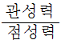
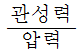
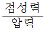
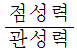
(정답률: 알수없음)
15. 헬리콥터가 속도 V로 수직 상승할 때 추력을 나타내는 식으로 옳은 것은? (단,주회전 날개의 회전면에 의해 가속되는 유도속도는 △v이다.)
- T=⍴A△v(V+△v/2)
- T=⍴A△v(V+△v)
- T=2⍴A△v(V+△v/2)
- T=2⍴A△v(V+△v)
(정답률: 알수없음)
16. 코닝각 10°인 상태에서 500rpm으로 회전하고 있는 반지름 3m인 공중정지비행을 하는 헬리콥터 주회전 날개 끝의 원주 속도는 약 얼마인가?
- 1⑤m/sec
- 155m/sec
- 208m/sec
- 308m/sec
(정답률: 알수없음)
17. 영연료 무게 (zero fuel weight)에 대한 설명 중 가장 관계가 먼 내용은?
- 비행기의 무게에서부터 탑재된 연료와 윤활유를 뺀 무게이다.
- 이 무게는 큰 날개의 강도상 중요한 영향을 미친다.
- 최대 연료량에는 제한이 있지만, 최대 영 연료 무게에는 제한이 없다.
- 날개 속에 들어 있는 연료무게가 날개에 작용하는 굽힘 모멘트를 감소시키는 역할을 한다.
(정답률: 알수없음)
18. 비행기의 무게 3300kg의 중심위치를 2m 이동하는 경우의 모멘트 변화는 다음 중 어떤 모멘트의 변화라고 볼 수 있는가?
- 20m인 곳에 330kg을 가하는 모멘트
- 30m인 곳에 400kg을 가하는 모멘트
- 20m인 곳에 400kg을 가하는 모멘트
- 30m인 곳에 330kg을 가하는 모멘트
(정답률: 알수없음)
19. 날개단면(airfoil)인 NACA 65,2-215에서 6의 의미는?
- 최대 두께의 크기
- 최대 캠버의 크기
- 최대 양력 계수
- 계열 (series number)
(정답률: 알수없음)
20. 관성력, 탄성력,공기력의 상호작용에 의해 날개 등이 불안정하게 진동하여, 심지어는 날개가 부러질 수 있는 현상을 무엇이라 하는가?
- flutter
- spin
- dutch roll
- buffet
(정답률: 알수없음)
2과목: 항공기동력장치
21. 수소 (H2)를 연료로 사용하는 기관의 완전연소에 필요한 공기 － 연료비 (중량비) 는 약 얼마인가? (단, 공기 중 산소의 량은 중량비로 23%이다.)
- 16：1
- 18：1
- 23：1
- 35：1
(정답률: 알수없음)
22. 왕복기관 중에서 배기밸브 스템 (exhaust valve stem) 내부에 금속나트륨 (metallic sodium)을 사용하는 경우가 있는데 사용하는 주 목적은 무엇인가?
- 진동감소를 위해
- 중량감소를 위해
- 냉각촉진을 위해
- 충격방지를 위해
(정답률: 알수없음)
23. 가솔린 엔진에 노킹 (knocking)을 방지하기 위한 방법으로 가장 관계가 먼 내용은?
- 제폭성이 좋은 연료를 사용한다.
- 연료의 점화지연을 길게 한다.
- 압축비를 낮춘다.
- 연소속도를 느리게 한다.
(정답률: 알수없음)
24. 항공기 왕복기관의 연료에 대한 설명으로 가장 관계가 먼 내용은?
- 연료의 기화성은 높으면 높을수록 좋은 연료이다.
- 연료의 발열량은 크면 클수록 좋은 연료이다.
- 제폭성이 강하면 강할수록 좋은 연료이다.
- 연소성이 좋으면 좋을수록 유리하다.
(정답률: 알수없음)
25. 4행정 4사이클 기관의 성능이 [보기]와 같을 때 제동 출력은 약 얼마인가?
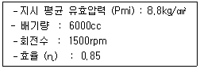
- 147.6ps
- 127.5ps
- 101.7ps
- 74.8ps
(정답률: 알수없음)
26. 추력마력을 나타내는 식으로 가장 옳은 것은? (단, F＝ 추력[kg], V0＝항공기 속도[m/sec],THP= 추력마력[ps])
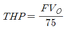
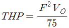
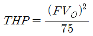
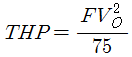
(정답률: 알수없음)
27. 터빈입구의 전 온도(total temperature)가 상승하면 터빈이 하는 일은?
- 증가한다.
- 감소한다.
- 증감이 없다.
- 증가하다가 감소한다.
(정답률: 알수없음)
28. 제트기관의 시동기중 가장 간단하고 무게가 가벼운 것은?
- 전동기 시동기
- 유압식 시동기
- 연료－공기식 시동기
- 공기식 시동기
(정답률: 알수없음)
29. 다음 중 공랭식 냉각 계통이 아닌 것은?
- 냉각 핀
- 다이나믹 댐퍼
- 배플
- 카울 플랩
(정답률: 알수없음)
30. 다음 중 가변면적 배기노즐에 대한 설명으로 가장 관계가 먼 내용은?
- 공기 흡입 덕트와 연동되도록 설계하는 것이 일반적이다.
- 애프터 버너를 가진 기관에도 사용된다.
- 초음속도에 많이 사용된다.
- 수축형 배기 덕트가 사용된다.
(정답률: 알수없음)
31. 다음 중 윤활유의 성질을 나타내는 것이 아닌 것은?
- 점도
- 세탄가
- 유동점
- 인화점
(정답률: 알수없음)
32. optimum spark advance 로부터 spark advance를 크게 하면 주로 어떠한 현상이 일어나는가?
- 사이클의 최고 온도 증가로 출력은 증가한다.
- 사이클의 유효일의 감소와 열손실의 증가로 출력은 감소한다.
- 출력이 감소하지만 Knock의 세기도 감소한다.
- 출력의 감소는 있지만 연소는 완만한 연소가 된다.
(정답률: 알수없음)
33. [그림]은 단순 가스터빈 (SIMPLE GAS TURBINE) 사이클을 도시한 것이다. 부품 S의 명칭은 무엇인가?
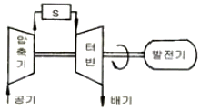
- 연소기
- 냉각기
- 재열기
- 열교환기
(정답률: 알수없음)
34. 터빈엔진 F.C.U 에서 trimming의 주목적은 무엇인가?
- 동력 레버의 위치를 적당하게 놓기 위하여
- 요구되는 최대 추력을 얻기 위하여
- 새로운 배기가스 온도 한계점을 얻기 위하여
- 압축비를 조절하기 위하여
(정답률: 알수없음)
35. 정속 프로펠러에서 비행 중 항공기의 속도가 감소되면 블레이드의 피치각은 어떻게 변하는가?
- 감소한다.
- 증가한다.
- 변하지 않는다.
- 증가하다가 일정해진다.
(정답률: 알수없음)
36. 프로펠러 blade가 1도 변화하는데 엔진 회전수는 약 60～90 (rpm) 정도 변화를 갖게 된다. 프로펠러 blade의 정확한 각도를 올바르게 표현한 것은?
- 프로펠러 깃의 시위와 프로펠러의 회전각이 이루는 각
- 프로펠러 깃의 시위와 프로펠러의 회전면이 이루는 각
- 프로펠러 깃의 시위와 프로펠러의 hub alignment가 이루는 각
- 프로펠러 깃의 시위와 항공기의 세로축이 이루는 각
(정답률: 알수없음)
37. Otto Cycle에 대한 설명으로 가장 관계가 먼 내용은?
- 정적과정 중에 연소가 발생한다.
- 압축비가 커질수록 열효율은 커진다.
- 점화장치에 의하여 연소가 시작된다.
- 다른 기관에 비하여 출력이 높으면 트럭에 사용된다.
(정답률: 알수없음)
38. 1 사이클 당 발생된 일을 행정체적으로 나눈 값은?
- 평균지시압력
- 평균유효압력
- 평균출력압력
- 평균연소압력
(정답률: 알수없음)
39. 가스터빈엔진의 연소효율에 대한 설명 중 가장 관계가 먼 내용은?
- 연소생성물을 화학적으로 분석하여 연소효율을 계산 할 수 있다.
- 사용된 연료의 실제 방출열량과 이상적인 열량의 비로 나타낸다.
- 비행고도가 높아지면 연소효율이 증가한다.
- 연소실의 공기 속도가 빠르면 연소효율이 낮아진다.
(정답률: 알수없음)
40. 아음속과 초음속에서 모두 우수한 성능을 낼 수 있는 복합엔진의 형식은 어느 것인가?
- 램제트 (ram jet)
- 터보램제트 (turbo-ram jet)
- 프롭팬 (prop-fan)
- 펄스제트 (pulse jet)
(정답률: 알수없음)
3과목: 항공기구조
41. 알루미늄 합금판 위에 순수 알루미늄을 피복한 것을 알크래드 (ALCLAD) 판이라고 한다. 순수 알루미늄을 피복하는 주 목적은?
- 내열성 증대를 위하여
- 인장강도 증대를 위하여
- 대기 중에서의 부식방지를 위하여
- 전식작용 (GALVANIC ACTION)방지를 위하여
(정답률: 알수없음)
42. 압축력을 받아 좌굴 가능성이 있는 경우 같은 하중을 담당하는 재료의 무게비에 대한 설명으로 가장 옳은 것은?
- 각 재료의 탄선계수비에 반비례한다.
- 각 재료의 탄성계수비의 제곱근에 비례한다.
- 각 재료의 탄성계수비의 3제곱근에 비례한다.
- 각 재료에 탄성계수비의 제곱근에 반비례한다.
(정답률: 알수없음)
43. 다음 내용 중 틀린 것은?
- 힘의 평형식은 구조물의 재질에 관계없다.
- Hooke의 법칙을 만족하는 재료는 모든 특성을 두 개의 재질 상수로만 표시할 수 있다.
- Hooke의 법칙이 성립하더라도 중첩의 원리가 적용이 되지 않을 수도 있다.
- Maxwell의 상반정리는 Hooke의 법칙이 성립되는 재질에 한 한다.
(정답률: 알수없음)
44. [그림]은 V-n선도 이다. VD는 무엇을 나타내는가?
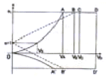
- 실제 수평 최대속도
- 설계운용속도
- 설계 급강하속도
- 설계돌풍운용속도
(정답률: 알수없음)
45. [그림]의 평면 트러스 구조물의 정적 과잉도 (static redundancy)는?
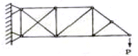
- 1
- 2
- 3
- 4
(정답률: 알수없음)
46. 수평 비행 중인 비행기의 날개 외피에 작용하는 응력의 형태로 가장 올바른 것은?
- 윗면은 인장응력, 아랫면은 압축응력
- 윗면은 압축응력, 아랫면은 인장응력
- 윗면, 아랫면 모두 인장응력
- 윗면, 아랫면 모두 압축응력
(정답률: 알수없음)
47. [그림]에서 부재 CD의 내력을 구한 값은? (단, AC=CB 이고, 점 A,B,C는 마찰 없는 힌지 (hinge)로 되어있다.)
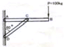
- 100√3kg의 압축력
- 200√3kg의 압축력
- 200kg의 압축력
- 400kg의 압축력
(정답률: 알수없음)
48. SAE 4130으로 표시되는 크롬 몰리브덴 강은 경비행기의 트러스 뼈대 재료로 주로 사용된다. 이 특수강이 다른 특수강과 달리 경비행기의 뼈대로 사용되는 주된 이유로 옳은 것은?
- 열에 의한 기계적 성질 저하가 적기 때문이다.
- 영의 탄성계수가 몹시 크기 때문이다.
- 공기 중에서의 부식에 강하기 때문이다.
- 가볍고 극한 응력이 크기 때문이다.
(정답률: 알수없음)
49. [그림]이 나타내는 페일세이프 구조 (failsafe structure) 형식은?
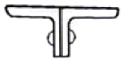
- 다경로 하중구조
- 이중구조
- 대치구조
- 하중경감구조
(정답률: 알수없음)
50. 무게 300kg인 비행기가 등고도 비행을 하면서 중심의 둘레에 각가속도 α으로 회전하고 있다. 중심으로부터 후방 4m에 있는 100kgf의 물체에 작용하는 힘 F는 약 얼마인가?
- 300kgf
- 240kgf
- 200kgf
- 120kgf
(정답률: 알수없음)
51. 폭 b=6cm, 높이 h=10cm의 사각형 단면을 가지는 외팔보의 끝에 100kgf의 집중하중이 작용할 때 보의 길이를 몇 cm로 하여야 하는가? (단, 재료의 굽힘 허용응력은 80kgf/cm2 이다.)
- 60cm
- 80cm
- 100cm
- 120cm
(정답률: 알수없음)
52. 법규상 T류 비행기의 최소설계제한 하중배수 n1은 얼마인가?
- 1.5
- 2.5
- 4.4
- 6.0
(정답률: 알수없음)
53. [그림]과 같이 양끝이 단순 지지된 기둥의 중간점이 다시 단순지지 되어 있다. 이 기둥이 좌굴을 일으키는 힘 P는?
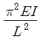
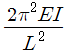
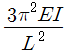
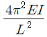
(정답률: 알수없음)
54. [그림]은 세미모노코크 구조형식인 비행기의 동체 부분이다. 스트링거 AB는 인장을 받으며 인장력의 크기는 A점보다 B점에서 △P만큼 크다. 다음의 어느 식이 성립하여야 힘이 평형되는가?
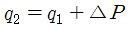
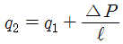
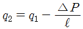
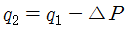
(정답률: 알수없음)
55. 수직 분포하중 p를 받는 평판의 처짐 w에 대한 지배 방정식은 다음과 같은 중조화 함수로 나타낼 수 있다. D의 표현식으로 가장 옳은 것은? (단, E:영률, v:아송 비, h:판의 두께, D:평판의 굽힘 강성)
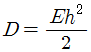
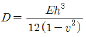
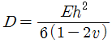
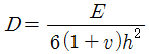
(정답률: 알수없음)
56. 날개의 상판부위를 설계할 때 고려하여야 하는 특성 중 중요도가 가장 낮은 것은?
- 압축강도
- 전단강도
- 인장강도
- 좌굴
(정답률: 알수없음)
57. 고성능 하니콤 샌드위치 구조물에 대한 설명으로 가장 관계가 먼 내용은?
- 면재 (facing)와 심재 (core)로 구성되어 있다.
- 면재는 전단력을 심재는 굽힘에 의한 수직응력을 담당한다.
- 굽힘 강성이 우수한 경량 구조물로 항공기 동체 등에 쓰인다.
- 내압과 외압의 압력차가 큰 우주 구조물에서는 압력 차 때문에 쉽게 사용할 수 없다.
(정답률: 알수없음)
58. 도면의 주요 4요소가 아닌 것은?
- 일반 주석란
- 도면번호란
- 표제란
- 변경란
(정답률: 알수없음)
59. 다음의 고유진동수에 대한 설명 중 이론적 정의에 가장 일치하는 내용은 어느 것인가?
- 특정 구조물의 고유진동수 및 모드는 외력의 형태와 관계없이 불변이다.
- 특정 구조물의 고유진동수 및 모드는 경계조건의 종류와 관계없이 불변이다.
- 특정 형상을 갖는 구조물의 고유진동수 및 모드는 구조물의 재료가 바뀌어도 불변이다.
- 특정 구조물의 고유진동수 및 모드는 측정 방법에 따라 달라진다.
(정답률: 알수없음)
60. 균일분포 피로하중을 받는 패널의 중앙에 균열이 있다. 균열이 10000사이클 만에 1cm에서 1.02cm로 성장했다. 단위 사이클 당 균열의 성장도는 얼마인가?
- 2×10-6cm/cycle
- 1×10-6cm/cycle
- 2×10-7cm/cycle
- 1×10-7cm/cycle
(정답률: 알수없음)
4과목: 항공장비
61. 항공기에 사용되는 축전지의 용량단위로 옳은 것은?
- 암페아ㆍ시 (Ampere-hour)
- 왓트 (Watt)
- 볼트ㆍ암페아 (Volt-ampere)
- 왓트ㆍ시 (Watt-hour)
(정답률: 알수없음)
62. 직류 전동기 (electric motor)중에서 시동특성이 가장 좋은 것은?
- 복권식 (compound-wound)
- 분권식 (shunt-wound)
- 직권식 (series-wound)
- 유도모터 (induction motor)
(정답률: 알수없음)
63. 항공기에 사용되는 직류발전기의 주요 구성품이 아닌 것은?
- field frame
- armature
- brush assembly
- exciter
(정답률: 알수없음)
64. 0.5kVA 짜리 교류 모터의 역률 (P.F)이 0.866일때 무효 전력은 약 얼마인가?
- 250Var
- 433Var
- 500Var
- 866Var
(정답률: 알수없음)
65. 다음 중 측정하고자 하는 회로 요소에 직렬로 연결하여야 하는 측정기기는?
- 전압계
- 저항계
- 주파수계
- 전류계
(정답률: 알수없음)
66. 다음의 항공계기 중에서 전원을 필요로 하는 것은?
- 열전대식 온도계
- 마그네신 계기
- 와전류식 회전계
- 원심력식 회전계
(정답률: 알수없음)
67. 다이아프램 (diaphragm)을 사용하는 계기가 아닌 것은?
- 고도계
- 흡기 압력계
- 작동유 압력계
- 대기 속도계
(정답률: 알수없음)
68. 공기압 계통의 특징에 대한 설명으로 가장 올바른 내용은?
- 공기압은 압축성이라서 그대로의 힘이 손실 없이 전달된다.
- 공기압은 비압축성이라서 그대로의 힘이 전달되지 못하고 손실된다.
- 공기압 계통은 압축성이며 return line이 요구되지 않는다.
- 공기압 계통은 비압축성이며 return line이 요구되지 않는다.
(정답률: 알수없음)
69. 항공기의 유압 계통에서 작동유의 압력이 일정압력 이하로 떨어지면 유로를 막아 작동기구의 중요도에 따라 우선 필요한 계통만을 작동시켜 주는 밸브는?
- 이퀄라이저 밸브 (Equalizer valve)
- 시컨스 밸브 (Sequence valve)
- 타이밍 밸브 (timing valve)
- 프라이오리티 밸브 (Priority valve)
(정답률: 알수없음)
70. 항공기 충돌 방지 장치 (ACAS)에서 “회피 정보”를 지시하는 계기는?
- 고도계
- 속도계
- 마하계
- 승강계
(정답률: 알수없음)
71. 항공용 고압산소 가스의 충전에 대한 설명으로 가장 올바른 내용은?
- 서비스 카트 (Cart)를 사용한다.
- 산소가스의 용기는 청색으로 표시되어 있다.
- 가스의 충전은 신속히 한다.
- 충전압력 표준온도는 10°이다.
(정답률: 알수없음)
72. 항공기 냉방장치에서 프레온 증기사이클 (freon vapor cycle) 냉각방식은 어떤 원리에 기초를 두고 있는가?
- 액체의 비등점은 액체 주위의 기체압력이 강하 될 때 상승된다.
- 액체의 비등점은 액체 주위의 기체압력이 상승 될 때 상승된다.
- 액체의 비등점은 액체 주위의 기체압력이 일정할 때 강하된다.
- 액체의 비등점은 액체 주위의 기체압력과 무관하다.
(정답률: 알수없음)
73. 변압기에서 와전류 손실을 감소시키기 위한 방법으로 가장 옳은 것은?
- 코일에 에나멜 처리를 한다.
- 원통 코일을 사용한다.
- 성층 철심을 사용한다.
- 사각형 철심을 사용한다.
(정답률: 알수없음)
74. 항공기가 TAXING하는 동안 지상조업요원과 조종실 내 운항승무원 간에 통화하기 위한 장비는?
- FLIGHT INTERPHONE SYSTEM
- CABIN INTERPHONE SYSTEM
- SERVICE INTERPHONE SYSTEM
- PASSENGER ADDRESS SYSTEM
(정답률: 알수없음)
75. 다음 중 선국한 지상국으로부터 방위와 거리를 알 수 있는 장치는?
- TACAN
- DME
- FDR
- FMS
(정답률: 알수없음)
76. AUTO LAND SYSTEM에서 CATⅡ에 대한 설명으로 가장 올바른 것은?
- 결정 고도가 최소 300ft이고 RUNWAY VISUAL RANGE는 1000m로 접근 성공이 확실한 것
- RUNWAY VISUAL RANGE는 최소 200m로 최종 착륙단계에서 활주로를 따라 착륙할 수 있다.
- RUNWAY VISUAL RANGE는 최소 50m인 상태로 활주로나 유도로 표면을 충분한 시계 상태로 착륙할 수 있다.
- 결정고도가 최소 200ft이하이고 RUNWAY VISUAL RANGE는 800m~400m로 접근 성공이 확실한 것
(정답률: 알수없음)
77. 고도계 오차에 대한 설명 중 가장 관계가 먼 내용은?
- 눈금오차 (Parallax Error): 고도계 제작시 눈금이 불균일하여 생기는 오차
- 온도오차 (Thermal Error): 고도계를 구성하는 부품이 온도 변화에 의한 팽창／수축에 의해 생기는 오차
- 탄성오차 (Elastic Error)： 탄성체인 공함 (Aneroid)의 탄성계수 변화에 따른 오차
- 기계적인 오차 (Mechanical Error)： 가동부분, 연결부분, 마찰 등에 의해 생기는 오차
(정답률: 알수없음)
78. 써머커플 (thermocouple)온도계에서 수감부 쪽에 보상 저항을 설치하는 주 목적은?
- 주파수를 제어하기 위하여
- 리드선 길이 제어를 위하여
- 전압제어를 위하여
- 온도계 보호를 위하여
(정답률: 알수없음)
79. 전파의 이상 현상 중 자기폭퐁 (MAGNETIC STORM)현상으로 가장 올바른 내용은?
- 극지방에 가까울수록 전파방해가 심하다.
- 전파의 경로 상태의 변동에 따라 수신 강도가 시간적으로 변화하는 현상이다.
- 주파수가 높아질수록 방해가 작아진다.
- 태양이 비치는 지구의 반면 (낮) 에 단파가 가끔 갑자기 10분에서 수십 분간에 걸쳐 불능이 되는 현상이다.
(정답률: 알수없음)
80. 논리회로에서 입력 A와 B가 모두 0일 때, 출력 X가 1이 나오는 회로는 어느 것인가?
- EXCLUSIVE OR 회로
- EXCLUSIVE NOR 회로
- AND 회로
- OR회로
(정답률: 알수없음)
5과목: 항공제어공학
81. 다음 중 ( ) 안에 알맞은 내용은?
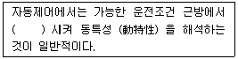
- 일반화
- 보상
- 안정화
- 선형화
(정답률: 알수없음)
82. 다음 블럭 선도 (Block Diagram)에서 G(s)=C(s)일 때 R(s)의 라플라스의 역변환 (Inverse Laplace Transformation)인 r(t)는 무슨 함수이겠는가?
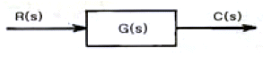
- Unit step
- Unit Ramp
- Unit lmpulse
- Unit variation
(정답률: 알수없음)
83. 다음 블록선도의 그림을 수식으로 나타낸 것 중에서 가장 올바른 것은?
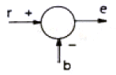
- e = b - r
- e = r + b
- e = r - b
- e = r × (-b)
(정답률: 알수없음)
84. 그림의 장치에서 전달함수
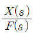
sms?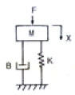
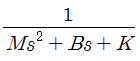
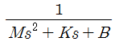
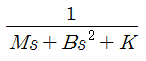
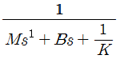
(정답률: 알수없음)
85. 전달함수
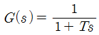
에서 시정수 T=1일 때 절점 주파수 (Break frequency) ω는?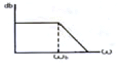
- 0.1 rad/sec
- 1 rad/sec
- 10 rad/sec
- 100 rad/sec
(정답률: 알수없음)
86. [그림]은 시간에 따른 비행기의 받음각의 형태를 나타낸 것이다. 안정성의 관점에서 어떻게 설명할 수 있는가?
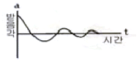
- 정적안정, 동적안정
- 정적불안정, 동적안정
- 정적불안정, 동적불안정
- 정적안정, 동적불안정
(정답률: 알수없음)
87. 1차 미분방정식으로 되어 있는 특성함수를 가진 제어계에서 계단함수의 입력을 가한 후 시정수(time constant)만큼 시간이 경과되었을 때, 계의 응답은 최종치의 몇 ％에 도달되는가?
- 27.3
- 50
- 63.2
- 100
(정답률: 알수없음)
88. 특성방정식이 S2+Bs+25=0 인 제어계가 임계감쇠 (critical damping)되기 위해서는 B가 어떤 값을 가져야 하는가?
- 1
- 5
- 10
- 20
(정답률: 알수없음)
89. 특성방정식이 s(s+4)(s+6)+K=0인 제어계에서 K=0~+∞ 변할 때의 근궤적 (root locus)의 실수축 상의 근 (root)의 존재영역으로 옳은 것은?
- 0 ~ -4 및 -6 ~ -∞
- 0 ~ +∞ 및 -4 ~ -6
- 0 ~ +4 및 +6 ~ +∞
- 0 ~ -∞ 및 +4 ~ +6
(정답률: 알수없음)
90. PIP(Proportional Integral and Differential) 제어기에 관한 설명으로 가장 옳은 것은?
- 비례 제어는 발산하는 경향이 있다.
- 비례－적분제어는 언제나 안정하다.
- 비례－미분제어는 과도응답 특성을 개선한다.
- 비례－적분제어는 정상상태 편차를 갖는다.
(정답률: 알수없음)
91. Static Margin이란 어떤 것인가?
- 평균공력시위에 대한 공력중심 (A.C)과 무게중심 (C.G) 간의 거리비
- MAC에 대한 풍압중심 (C.P)과 무게중심간의 거리비
- 풍압중심과 무게중심간의 거리
- 공력중심과 무게중심간의 거리
(정답률: 알수없음)
92. 항공기의 조종면 중에서 롤 각속도 제어 속성을 가진 것은?
- 엘리베이터 (elevator)
- 에일러론 (aileron)
- 러더 (rudder)
- 스포일러 (spoiler)
(정답률: 알수없음)
93. 항공기를 강체로 가정하고 운동방정식을 유도했을 때 비선형 미분방정식으로 표현되는데, 이러한 시스템은 어떤 종류의 시스템에 속하는가?
- 선형 연속치 시스템 (Linear continuous-time system)
- 비선형 연속치 시스템 (Nonlinear continuous-time system)
- 선형 이산치 시스템 (Linear discrete-time system)
- 비선형 이산치 시스템 (Nonlinear discrete-time system)
(정답률: 알수없음)
94. 일정한 크기의 외란이 시스템에 작용하고 있을 경우에,이 외란에 의한 영향을 완전히 제거할 수 있는 피드백 제어기법은?
- 비례제어
- 미분제어
- 적분제어
- 비례미분제어
(정답률: 알수없음)
95. 제어기를 설계할 수 있는 선형시스템의 기본조건으로 올바른 것은?
- 안정한 시스템
- 안정하고 제어 가능한 시스템
- 안정하고 관측 가능한 시스템
- 제어 가능하며, 관측 가능한 시스템
(정답률: 알수없음)
96. 적분제어기를 사용할 경우, 구동기에 포화현상이 발생하여 성능저하가 발생할 수 있다. 이러한 문제를 해결하기 위한 방법으로 가장 올바른 것은?
- 피드포워드 보상기
- 노치 보상기
- 적분기 와인드업
- 적분기 반－와인드업
(정답률: 알수없음)
97. 기계시스템과 전기시스템을 유추할 때, 힘－전압 유추법에 바르게 연결되지 않은 것은?
- 감쇠계수 － 저항의 역수
- 속도 － 전류
- 질량 － 인덕턴스
- 스프링계수 － 커패시턴스의 역수
(정답률: 알수없음)
98. 단주기 운동특성이 나쁜 항공기에 안정성 증대장치를 설계하고자 한다면 어떤 상태변수를 되먹임 해야 하는가?
- 피치각
- 피치각속도
- 받음각
- 속도
(정답률: 알수없음)
99. 항공기의 비행특성에 관한 다음의 설명 중 (a) ~ (d)안에 들어가는 용어로 가장 옳은 것은?
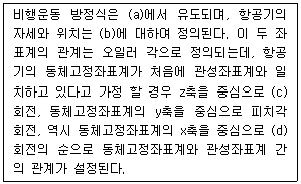
- a.동체고정좌표계 b.관성좌표계 c.요우각 d.롤각
- a.관성좌표계 b.동체고정좌표계 c.요우각 d.롤각
- a.동체고정좌표계 b.관성좌표계 c.롤각 d.요우각
- a.관성좌표계 b.동체고정좌표계 c.롤각 d.요우각
(정답률: 알수없음)
100. 다음 중 프로세서 제어의 제어량이 아닌 것은?
- 자세
- 유량
- 레벨
- 온도
(정답률: 알수없음)